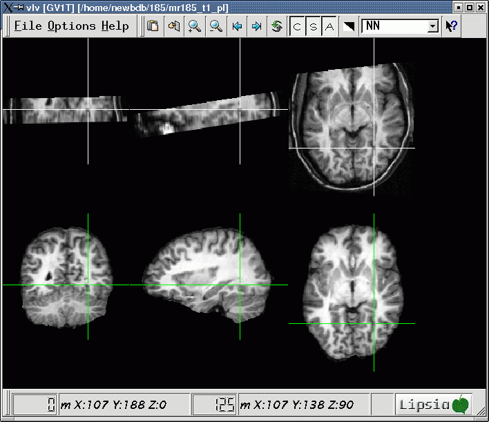

vdotrans -in file2D.v -out file3D.v
-trans transmatrix.v
The registration accuracy can be checked by applying the transformation to 2D anatomical slices, and comparing the resulting image with the reference image. Now click onto several easily identifiable landmarks and check whether they match in the two images.
Example:
vlview -in /home/newbdb/024/mr024_t1_pl.v file3D.v
If the result is not satisfactory, then redo 'vreg3d' using different parameters.

Max Planck Institute for Human Cognitive and Brain Sciences. Further Information:
lipsia@cbs.mpg.de